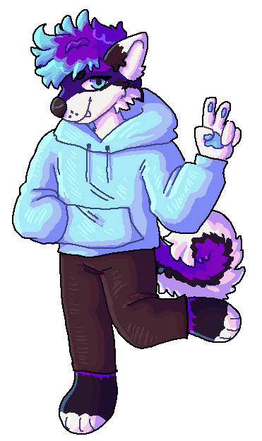

Hey, I'm Tony but I go by ThatTonybo online.
I'm a web developer, furry and retail worker from NSW, Australia.
I happily help run the elementary Community Discord — check out elementary OS or join the server!
Here's my socials — the best way to get in touch is via Discord, Telegram or email;
Yes, I'm a furry! Here's my little purple fox:
I love anything tech, my main hobby is web dev but I also do game/app dev, work on physical hardware and soldering.
I have a big collection of tech and a big interest in VR too.
(p.s. send cuddles please)